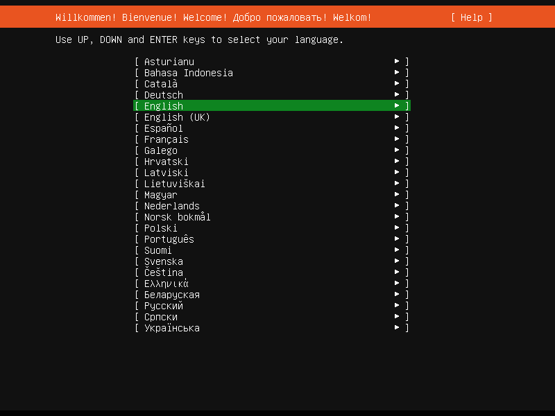
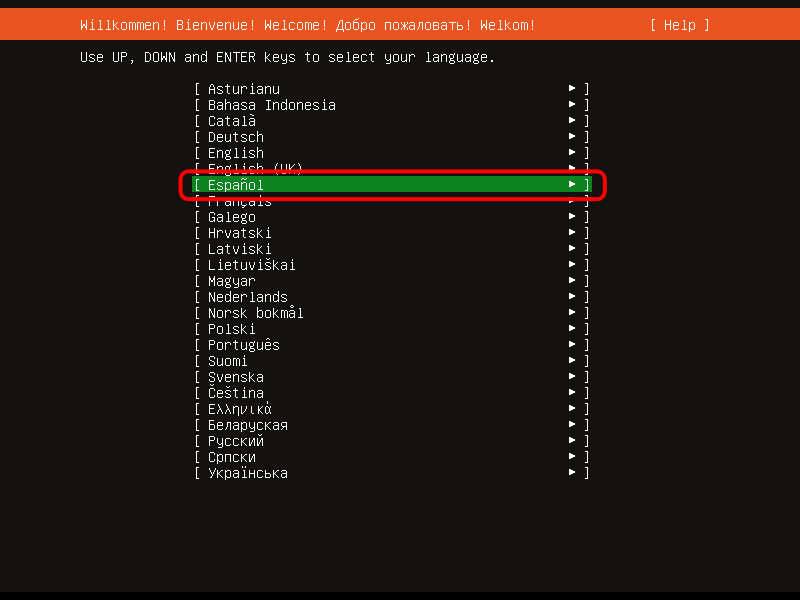
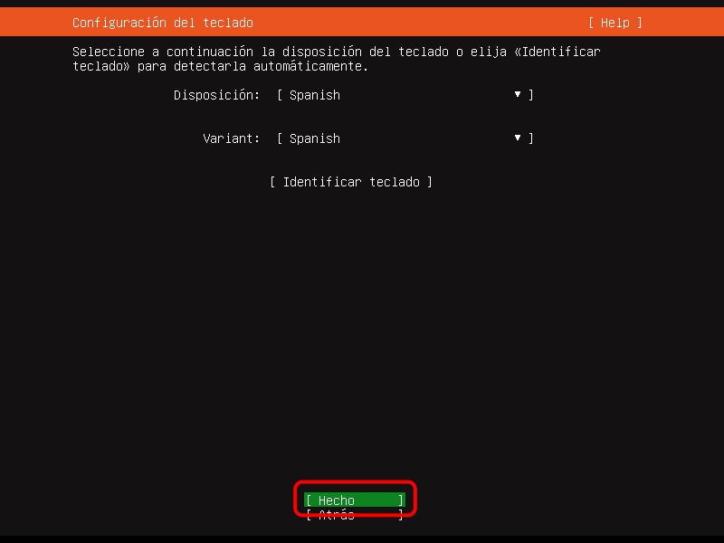
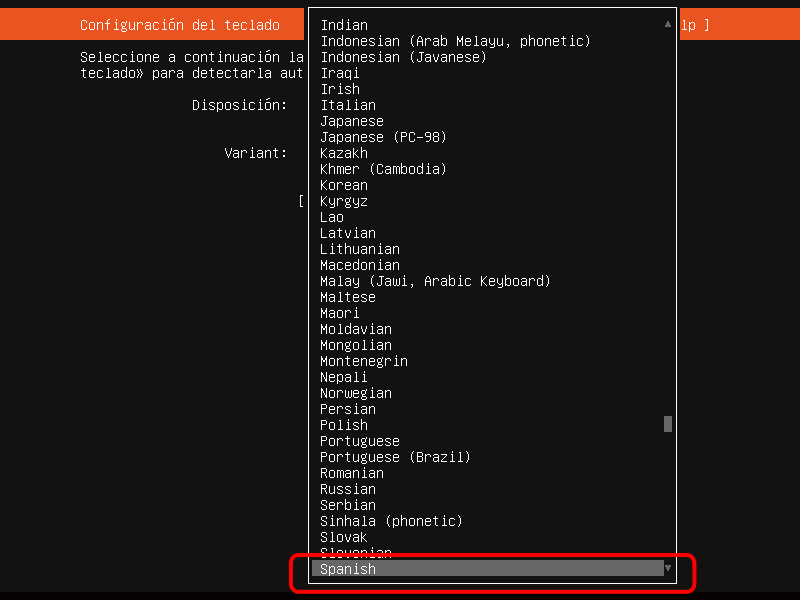
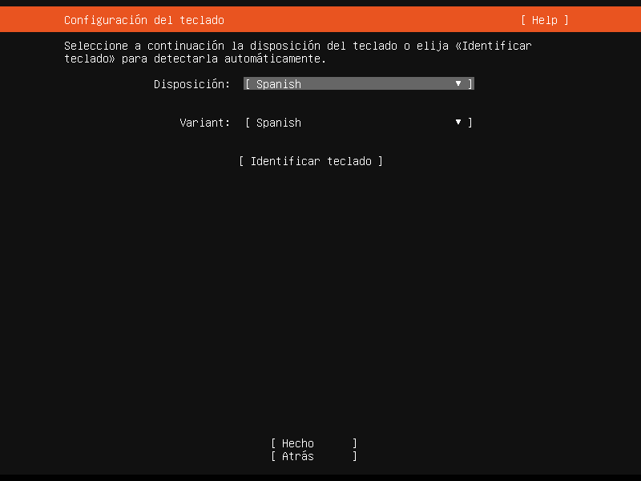
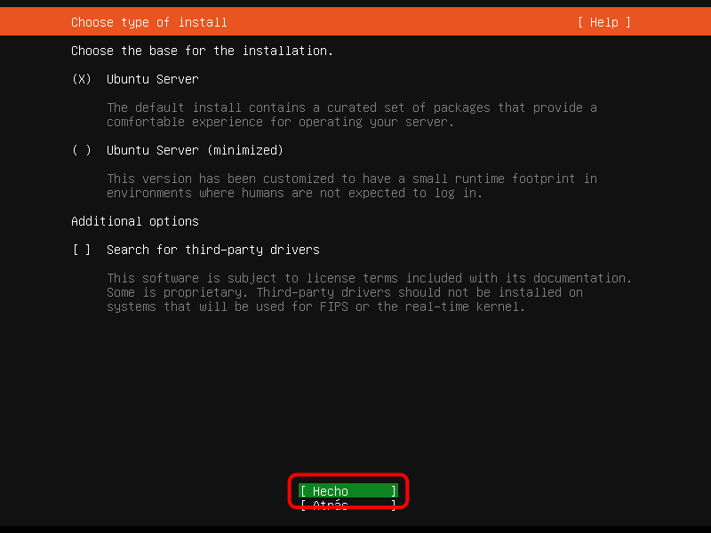
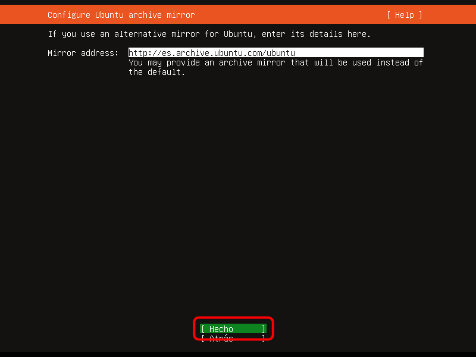
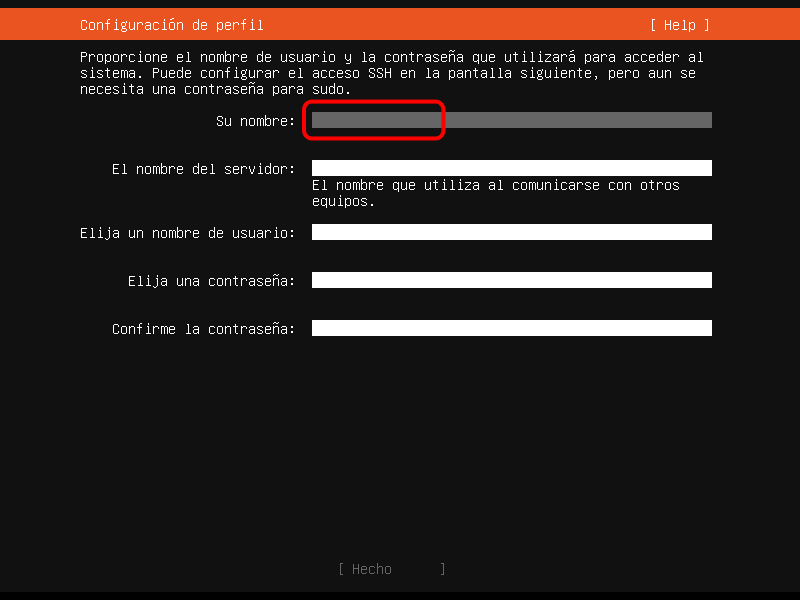
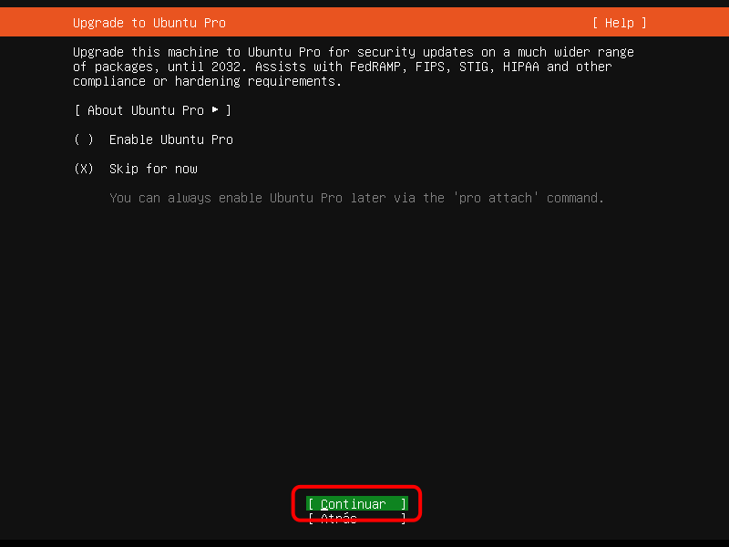
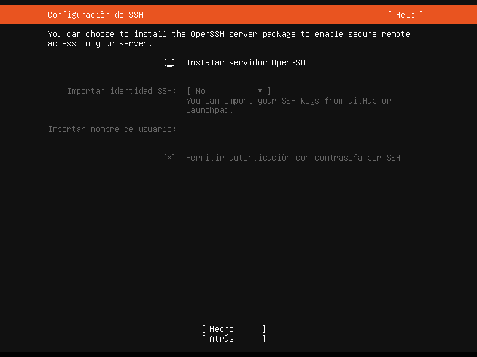

Instalación, paso a paso
Estos son los pasos a realizar para instalar Ubuntu Server 20.04 LTS, publicada el 23 de abril de 2020, en una máquina virtual.
Puede descargar la imagen .iso de instalación de la versión más reciente de Ubuntu Server 20.04 LTS de la página de descarga oficial https://releases.ubuntu.com/20.04/.
Entre corchetes se indica el tiempo que tarda en pasar al paso siguiente una vez elegida la opción correspondiente.
Los cuadros con borde negro contienen las pulsaciones de teclado que se realizan en ese paso de la instalación, que se deben incluir en el constructor de packer de la máquina virtual. En los casos en que se desplaza el cursor en una pantalla, se han añadido unos segundos de espera antes de pulsar Intro para dar tiempo a ver que se realiza el movimiento del cursor en la pantalla.
- Elija el idioma español [1 s]:
<down><down><down><down><down><down><down><down><down><down><down><down><down><down><wait3><enter><wait2>


- Elija modificar la disposición del teclado [1 s]:
<up><up><up><wait3><enter><wait2>
 
- Elija la disposición del teclado Español [1 s]:
<up><up><up><up><up><up><up><up><up><up><up><up><up><up><up><up><up><up><up><up><up><wait3><enter><wait2>
 
- Confirme la disposición del teclado elegida [1 s]:
<down><down><down><wait3><enter><wait2>


- Confirme el interfaz de red [1 s]:
<enter><wait2>

- Confirme el proxy utilizado (en este caso, ninguno) [1 s]:
<enter><wait2>

- Confirme la dirección del mirror [1 s]:
<enter><wait2>

- Configure el disco completo como grupo LVM [1 s]:
<down><down><spacebar><wait2>


- Confirme la configuración del disco [1 s]:
<down><down><down><wait3><enter><wait2>

- Confirme de nuevo la configuración del disco [1 s]:
<enter><wait2>

- Confirme de nuevo la configuración del disco [1 s]:
<down><wait3><enter><wait2>


- Escriba su nombre completo (en la captura, mclibre) [1 s]:
mclibre<enter><wait2>


- Escriba el nombre de la máquina (en la captura, ubuntu) [1 s]:
ubuntu<enter><wait2>

- Escriba su nombre de usuario (en la captura, mclibre) [1 s]:
mclibre<enter><wait2>

- Escriba su contraseña de usuario (en la captura, mclibre) [1 s]:
mclibre<enter><wait2>

- Repita su contraseña de usuario (en la captura, mclibre) [1 s]:
mclibre<enter><wait2>

- Confirme los datos del usuario [1 s]:
<enter><wait2>

- Instale el servidor OpenSSH [1 s]:
<spacebar><down><down><wait3><enter><wait2>
- No instale ninguna aplicación en forma de snap [180 s]:
<end><down><wait3><enter><wait140>
 Tenga en cuenta que tras este paso se realiza la instalación y se descargan archivos de Internet por lo que la duración de este paso puede variar bastante, dependiendo de la conexión a Internet y del estado de los servidores de Ubuntu. Puede hacer una prueba con el valor propuesto aquí (180 s) y aumentarlo si fuera necesario.
Tenga en cuenta que tras este paso se realiza la instalación y se descargan archivos de Internet por lo que la duración de este paso puede variar bastante, dependiendo de la conexión a Internet y del estado de los servidores de Ubuntu. Puede hacer una prueba con el valor propuesto aquí (180 s) y aumentarlo si fuera necesario.
- Una vez completada la instalación, reinicie el sistema [20 s]:
Nota: Al no expulsarse la iso de instalación, es necesario pulsar Intro
<enter><wait20>

- Al no expulsarse la iso de instalación, es necesario pulsar Intro para completar el reinicio [20 s]:
<enter><wait20>

- Una vez reiniciado, compruebe que puede entrar con el usuario creado en la instalación (este paso no se realizará durante la creación de la máquina virtual con Packer):
Nota: Puede ser necesario pulsar Intro para poder ver la petición de nombre y contraseña de usuario